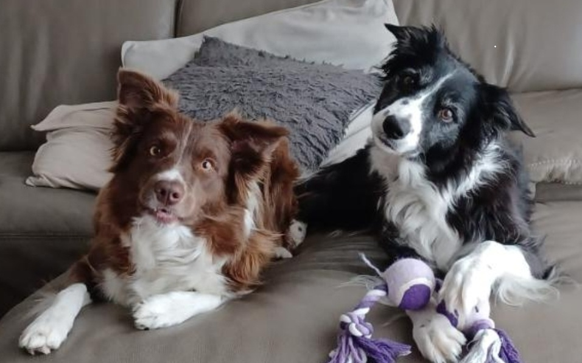

1. Zwemmen
Ik ga wekelijks zwemmen in mijn zwemclub in Moorslede om aan mijn conditie te werken.
Meer info: Zwemclub Jonge Dolfijnen

Volledige naam: Jarne AlgoetIk ga wekelijks zwemmen in mijn zwemclub in Moorslede om aan mijn conditie te werken.
Meer info: Zwemclub Jonge Dolfijnen
In mijn vrije tijd speel ik graag competitieve of solo games.
Meer info: Playstation Store
In het weekend maak ik graag lange wandelingen in de natuur om tot rust te komen.
Meer info: Natuurpunt
Mijn favoriete voetbalclub is Manchester United, ze spelen in de Premier League.
De eerste film dat ik ooit in een cinema heb gekeken, de film heeft goede acteurs met veel actie en spanning.
Hier is een overzicht van de verwachte punten voor drie vakken uit de opleiding Toegepaste Informatica voor ik en drie medestudenten:
| Vak | Jarne | Rune | Simon | Nathan |
|---|---|---|---|---|
| Webdevelopment 1 | 10/20 | 12/20 | 18/20 | 16/20 |
| Databases | 15/20 | 12/20 | 17/20 | 13/20 |
| Fundamentels of Programming | 11/20 | 16/20 | 12/20 | 14/20 |